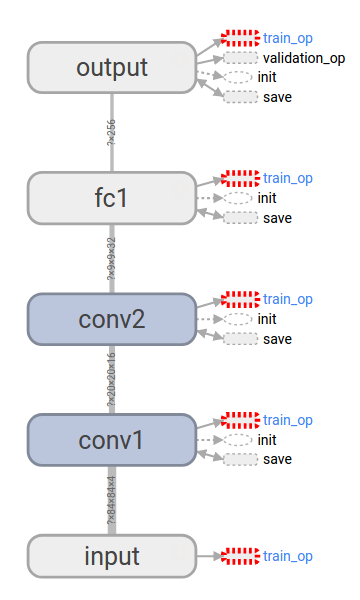
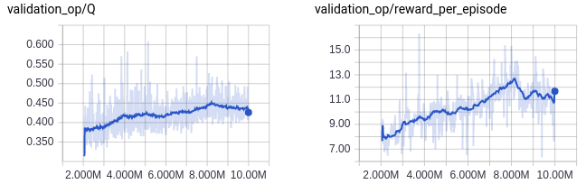
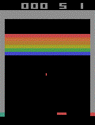

Table of Contents
Introduction
This is the first of a series of blog posts that will describe my project
of implementing reinforcement learning of Atari games using TensorFlow and OpenAI Gym. This project is meant to be a way of self-studying recent developments of reinforcement learning, so it will start with a simpler implementation and then evolve into more advanced and diverse one. I am planning to describe the process incrementally so that this series of post will serve as a journal book for myself as well as a guide for others who want to try a similar project for themselves.
In this post I focus on a branch of the project,
and will explain how to reproduce the architecture and the experiment of [1], where a relatively small neural network was trained via reinforcement learning to successfully play various Atari games using Stella emulator. There is a second paper [2] by the same group with an enhanced architecture and more detailed description of the choice of the hyperparameters for training, and we will use those hyperparameters when there is no explicit description of such a parameter in [1]. In the following posts of this series I will implement the enhanced architecture and compare the results.
There are similar projects of others that use TensorFlow to reproduce the result of [2] that I have frequently referred to.
- https://github.com/gliese581gg/DQN_tensorflow
- https://github.com/devsisters/DQN-tensorflow
- https://github.com/songrotek/DQN-Atari-TensorFlow
Here I will focus on the simpler architecture of [1], and extend it to [2] in the following posts.
The original Lua/Torch code for [2] can be found at:
which I also have studied from part to part to figure out the details that are unclear in the papers.
Requirements
The requirements to run [3] are:
- Python 3
- NumPy
- TensorFlow 1.0
- OpenAI Gym installed with gym[all]
- Pillow
The difference from the other TensorFlow projects I mentioned previously is that they are using Python 2, TensorFlow versions prior to 1.0, OpenCV instead of Pillow, and ALE rather than OpenAI Gym. My choice are not particularly superior in terms of performance, but I think is easier to install because all my requirements can be installed via pip.
That is why I used Pillow instead of OpenCV, which is definitely more powerful as a Image Processing Library, because OpenCV with Python binding is somewhat notorious to properly install, see this guide.
A similar reasoning applies for the choice of OpenAI Gym over ALE. Although ALE is not that difficult to install from the source, it requires some work to install it and run it using Python 3, for example instead of the following
ale.getInt('frame_skip')
you have to use
ale.getInt(b'frame_skip')
Even though what is inside the OpenAI Gym Atari environment is a Python 3 wrapper of ALE, so it may be more straightforward to use ALE directly without using the whole OpenAI Gym, I think it would be advantageous to build a reinforcement learning system around OpenAI Gym because it is more than just an Atari emulator and we can expect to generalize to other environments using the same architecture if we stick to using the API of OpenAI Gym. If you are interested in using just ALE but on Python 3, instead of using OpenAI Gym you can use a thin Python 3 wrapper that OpenAI Gym provides, atari-py.
The purpose of this project is building a simpler system and that explains why I made such choices. But in the following projects we will make changes to boost up the performance.
Architecture
The Q-network of [1] is simple and has the following layers:
- First it takes a tensor of dimension [84, 84, 4] as an input, which is a stack of four grayscale images preprocessed from the screen captured from the Atari emulator.
- The next layer is a 2d convolution layer, with a filter of dimension [height, width, in, out] = [8, 8, 4, 16] and a stride of 4, followed by a ReLU layer. The resulting tensor is of dimension [20, 20, 16].
- Then there is another 2d convolution layer, with a filter of dimension [4, 4, 16, 32] and a stride of 2, followed by a ReLU layer. The output of this layer is of dimension [9, 9, 32].
- The previous output is flattened and used as an input for the first fully connected layer followed by a ReLU layer, whose output is of dimension [256].
- The last layer is another fully connected layer without any nonlinear unit, and the output has the same dimension as the number of actions.
Implementation
Difference between ALE and OpenAI Gym
There are various differences between the initialization of the ALE Atari environment we get from ALE is different from that of the OpenAI Gym environment.
- Even if we use the same breakout.bin ROM file, the minimal action set from ALE has four actions (0, 1, 3, 4), whereas that from OpenAI Gym has six actions (0, 1, 3, 4, 11, 12). I could not figure out why this is the case, even though I took a quick look at the C++ source codes. I hope to figure this out later after taking a good look at the source codes.
- The default value of ALE's frame_skip is 4, but for OpenAI Gym there are different environments for the same game and they set it differently. For example, there is Breakout-v0 that skips frames stochastically between 2 and 5, see def _step() of gym/envs/atari/atari_env.py, and there is BreakoutDeterministic-v0 that fixed the number of skipped frames to 4, see gym/envs/__init__.py for more details and additional environments with different settings.
- Both the ALE environment and the Gym environments with *-v0 set repeat_action_probability to 0.25. But the Gym environments with *-v3 set it to 0.
Inside OpenAI Gym
To transfer one RL system to another OpenAI Gym environment, it is not recommended to tweak its parameters bypassing the APIs, but if needed the instance of ALEInterface can be accessed like the following to set repeat_action_probability.
import gym
gym_ale = gym.make('BreakoutDeterministic-v0').env.ale
# Now we can access ALEInterface.
gym_ale.getFloat('repeat_action_probability')
But here we will refrain ourselves from doing such an operation.
Parameters of tf.train.RMSPropOptimizer
The optimization of the Q-network is done by minimizing the loss of the squared error of the Q-values using RMSProp. [1] lacks the detail of how to choose the parameters of the optimizer, so we use the choice of [2] for them. TensorFlow's tf.train.RMSPropOptimizer uses different names for the parameters compared to [2]. In the beginning of TensorFlow's tensorflow/python/training/rmsprop.py, it says
"""One-line documentation for rmsprop module.
rmsprop algorithm [tieleman2012rmsprop]
A detailed description of rmsprop.
- maintain a moving (discounted) average of the square of gradients
- divide gradient by the root of this average
mean_square = decay * mean_square{t-1} + (1-decay) * gradient ** 2
mom = momentum * mom{t-1} + learning_rate * g_t / sqrt(mean_square + epsilon)
delta = - mom
The centered version additionally maintains a moving (discounted) average of the
gradients, and uses that average to estimate the variance:
mean_grad = decay * mean_square{t-1} + (1-decay) * gradient
mean_square = decay * mean_square{t-1} + (1-decay) * gradient ** 2
mom = momentum * mom{t-1} + learning_rate * g_t /
sqrt(mean_square - mean_grad**2 + epsilon)
delta = - mom
"""
and we need to find out what values of decay, momentum, epsilon, and centered of tf.train.RMSPropOptimizer we should use by considering the hyperparameters described in [2] and in the original Lua code dqn/NeuralQLearner.lua.
function nql:qLearnMinibatch()
-- Perform a minibatch Q-learning update:
-- w += alpha * (r + gamma max Q(s2,a2) - Q(s,a)) * dQ(s,a)/dw
assert(self.transitions:size() > self.minibatch_size)
local s, a, r, s2, term = self.transitions:sample(self.minibatch_size)
local targets, delta, q2_max = self:getQUpdate{s=s, a=a, r=r, s2=s2,
term=term, update_qmax=true}
-- zero gradients of parameters
self.dw:zero()
-- get new gradient
self.network:backward(s, targets)
-- add weight cost to gradient
self.dw:add(-self.wc, self.w)
-- compute linearly annealed learning rate
local t = math.max(0, self.numSteps - self.learn_start)
self.lr = (self.lr_start - self.lr_end) * (self.lr_endt - t)/self.lr_endt +
self.lr_end
self.lr = math.max(self.lr, self.lr_end)
-- use gradients
self.g:mul(0.95):add(0.05, self.dw)
self.tmp:cmul(self.dw, self.dw)
self.g2:mul(0.95):add(0.05, self.tmp)
self.tmp:cmul(self.g, self.g)
self.tmp:mul(-1)
self.tmp:add(self.g2)
self.tmp:add(0.01)
self.tmp:sqrt()
-- accumulate update
self.deltas:mul(0):addcdiv(self.lr, self.dw, self.tmp)
self.w:add(self.deltas)
end
From the above we can see that decay=0.95 ((squared) gradient momentum in [2]), momentum=0, epsilon=0.01 (min squared gradient in [2]), and centered=True. And although the Lua code can anneal the learning rate depending on the setup, when we see run_gpu of the original Lua code, the learning rate is fixed to 0.00025.
Preprocessing
[1] does not describe how to transform an RGB screen captured from the Atari emulator to the input of the Q-network. [2] gives a bit more detail, saying that preprocessing extracts the Y-channel from the RGB image. But for more detail, I looked into the Lua code.
First, the transformation of the RGB image to a grayscale image with a smaller size is done using Torch's image libraries. In dqn/Scale.lua,
function scale:forward(x)
local x = x
if x:dim() > 3 then
x = x[1]
end
x = image.rgb2y(x)
x = image.scale(x, self.width, self.height, 'bilinear')
return x
end
it uses Torch's image.rgb2yuv([dst,] src) and image.scale(src, width, height, [mode]). Next, Each image is saved in uint8, then is cast into float and is divided by 0xFF=255, the maximum value of uint8.
dqn/TransitionTable.lua:109: self.buf_s = self.buf_s:float():div(255)
dqn/TransitionTable.lua:110: self.buf_s2 = self.buf_s2:float():div(255)
dqn/TransitionTable.lua:259: return self:concatFrames(1, true):float():div(255)
dqn/TransitionTable.lua:290: self.s[self.insertIndex] = s:clone():float():mul(255)
dqn/TransitionTable.lua:302: local s = s:clone():float():mul(255):byte()
But we will not rescale the input by 0xFF, assuming it will not affect the system as long as we consistently use the rescaling, or in fact not using any rescaling in our case.
Then there is the question of how to initialize the stacked input for the Q-network when we reset the emulator. I reset it to zero and added the initial state preprocessed from the initial screen, according to what is done at deep_atari.reset_game() of main.py:. I think this is also what is done in the original Lua code, but another careful look at the code is needed.
Padding of convolution
Torch's nn.SpatialCovolution does not add any padding, so we use padding=VALID for tf.conv2d.
Reward rescaling
Unlike [1] and [2], rescaling of rewards is not done, hoping that this may help in training the Q-network because a larger reward will give more positive feedback. However, as we will see later, the trained network performs not as good as those of [1] and [2], so I guess this may not have been a big help.
NumPy MemoryError
We instantiate the agent with allocating a big memory space for the replay memory using NumPy, about 7GB when we use a replay memory with size of 1 million. If there is not enough free memory space, NumPy will raise MemoryError. If this happens then the agent should start with a smaller replay memory.
Training
Here I will discuss the training results. On the one hand, this is the result of running many episodes of games, so the results have some statistical significance in terms of average Q value per episode and average reward per episode; on the other hand, as training runs, each run is just a single experiment so it may be a bit of stretch to compare one run with another and contemplate on the significance of the different choice of parameters. With such a caveat, I will put the graphs of Q and reward that are measured in the following way.
- Average Q value per episode is measured not by taking average of all Q values for the past actions but according to the evaluation scheme of [2]: we first pick validation_size=500 states once we start the training, then measure the average Q values of the states when evaluating the agent.
- Average reward per episode, on the other hand, is the genuine average over the past 50k steps(= weight updates), which is then reset to the reward of the last episode every 50k steps. This is different from the measurement of [2], which I guess is the same as that of [1] because the description is similar although again it lacks the detail. When we implement the architecture of [2] we will change the measurement of the average reward per episode accordingly.
4 vs 6 actions
As previously discussed, even when loading the same ROM, we get different sets of minimal actions depending on the environment. As an experiment as well as to normalize the results described in [1] and [2], I trained the same OpenAI Gym environment with manually adjusted sets of actions. As we can expect, when there is less number of actions to consider, the agent is trained faster to achieve the same result, as we can see in use_gym_deterministic and use_gym_deterministic_4_actions.
Deterministic vs stochastic frame skipping
In the graph we see labels with default and labels with deterministic, which use Breakout-v0 and BreakoutDeterministic-v0, respectively, for OpenAI Gym environments. When we compare use_gym_default with use_gym_deterministic, it seems that the stochasticity introduced by random frame skipping was helpful in scoring higher reward as well as enabling the agent to get higher \(\frac{\dd Q}{\dd t}\), although the agent could not get trained enough to obtain the same average Q if it is trained with the randomness as that of the deterministic frame skipping.
Anomaly?
But when we compare use_gym_default_4_actions with use_gym_default or use_gym_deterministic_4_actions, the above considerations seem to be not as certain as described. Because it is all the randomness being introduced, starting from the internal state of the emulator to \(\epsilon\)-greedy policy, that makes such comparisons difficult. To make the above observations to be concrete hypothesis we need more training data, but because it takes about six hours to obtain each training data on my modest computer, and because we expect introducing a better architecture described in [2] may give us faster training, I will not pursue those directions here.
Result
After training the agent for 10 million weight updates, it got the average reward per episode of about 12, which is higher than that of a random agent (1.7) or other RL agent without using a deep network (5~6), but is definitely much lower than a human average (~30). The following is the animation of the agent playing 10 episodes of Breakout.
We will pursue the goal of obtaining a level better than a human player after implementing a deeper architecture and a better training algorithm described in [2].
Coming up
In the following posts I will improve the current simple deep Q-network with additional implementation of:
References
| [1] | (1, 2, 3, 4, 5, 6, 7, 8, 9, 10) Playing Atari with Deep Reinforcement Learning, https://arxiv.org/abs/1312.5602 |
| [2] | (1, 2, 3, 4, 5, 6, 7, 8, 9, 10, 11, 12, 13, 14, 15, 16, 17, 18, 19, 20) Human-level control through deep reinforcement learning, https://doi.org/10.1038/nature14236 |
| [3] | A simple deep Q-network for Atari game Breakout, https://github.com/chan-y-park/rl-atari/tree/simple_dqn |
Comments
comments powered by Disqus